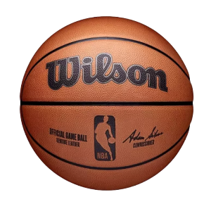
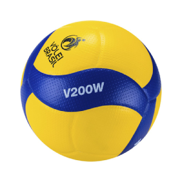

Bem-vindo à Abelha Esportes, o seu destino para tudo relacionado ao mundo dos esportes! Estamos comprometidos em fornecer uma experiência única para os entusiastas de esportes e atletas de todos os níveis. Com uma ampla gama de produtos e equipamentos esportivos, nossa loja é o lugar perfeito para encontrar o que você precisa para elevar o seu desempenho e estilo de vida esportivo. Na Abelha Esportes, acreditamos que o esporte é mais do que uma atividade física; é paixão, saúde e conexão. Oferecemos uma seleção cuidadosamente curada de roupas esportivas, calçados, acessórios e equipamentos de alta qualidade para esportes como futebol, basquete, vôlei, corrida, fitness e muito mais. Nossos produtos são escolhidos com base na durabilidade, desempenho e estilo, garantindo que você tenha o melhor em suas mãos. Além disso, nosso atendimento ao cliente é incomparável. Nossa equipe está aqui para ajudá-lo a encontrar o que você precisa, responder a todas as suas perguntas e fornecer orientação especializada sobre os produtos. Na Abelha Esportes, não se trata apenas de vender produtos, mas de criar uma comunidade de entusiastas de esportes que compartilham a mesma paixão. Quer você seja um atleta dedicado, um entusiasta do fitness ou alguém que simplesmente aprecia a prática de esportes, a Abelha Esportes está pronta para apoiá-lo em sua jornada esportiva. Venha nos visitar e descubra como podemos ajudá-lo a alcançar seus objetivos esportivos. Junte-se à nossa colmeia esportiva na Abelha Esportes!

Bem-vindo à Abelha Esportes, o seu destino para tudo relacionado ao mundo dos esportes! Estamos comprometidos em fornecer uma experiência única para os entusiastas de esportes e atletas de todos os níveis. Com uma ampla gama de produtos e equipamentos esportivos, nossa loja é o lugar perfeito para encontrar o que você precisa para elevar o seu desempenho e estilo de vida esportivo. Na Abelha Esportes, acreditamos que o esporte é mais do que uma atividade física; é paixão, saúde e conexão. Oferecemos uma seleção cuidadosamente curada de roupas esportivas, calçados, acessórios e equipamentos de alta qualidade para esportes como futebol, basquete, vôlei, corrida, fitness e muito mais. Nossos produtos são escolhidos com base na durabilidade, desempenho e estilo, garantindo que você tenha o melhor em suas mãos. Além disso, nosso atendimento ao cliente é incomparável. Nossa equipe está aqui para ajudá-lo a encontrar o que você precisa, responder a todas as suas perguntas e fornecer orientação especializada sobre os produtos. Na Abelha Esportes, não se trata apenas de vender produtos, mas de criar uma comunidade de entusiastas de esportes que compartilham a mesma paixão. Quer você seja um atleta dedicado, um entusiasta do fitness ou alguém que simplesmente aprecia a prática de esportes, a Abelha Esportes está pronta para apoiá-lo em sua jornada esportiva. Venha nos visitar e descubra como podemos ajudá-lo a alcançar seus objetivos esportivos. Junte-se à nossa colmeia esportiva na Abelha Esportes!,
Cristian Afonso Dias
José Antonio Prates, Zé Prates